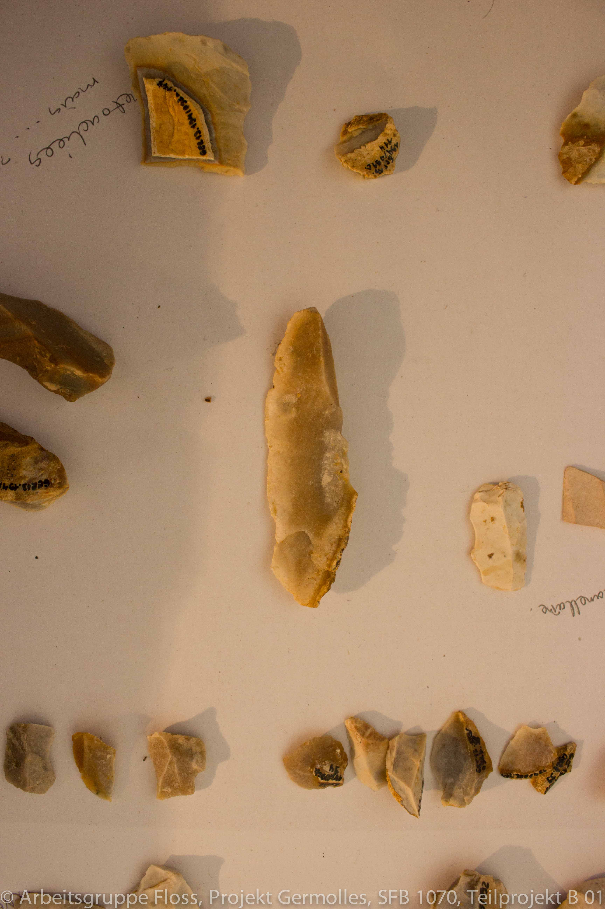
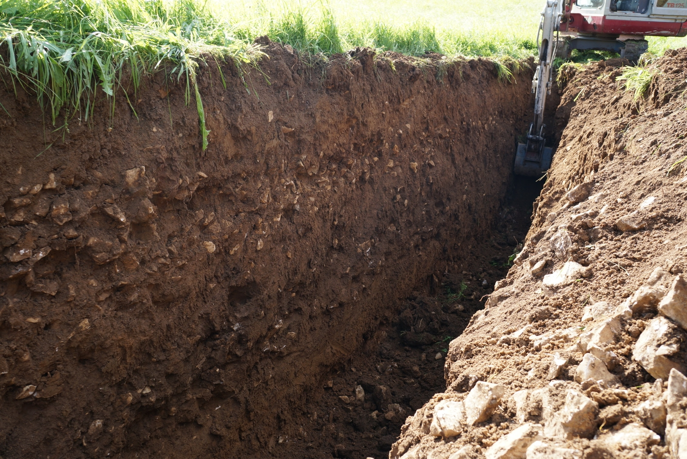
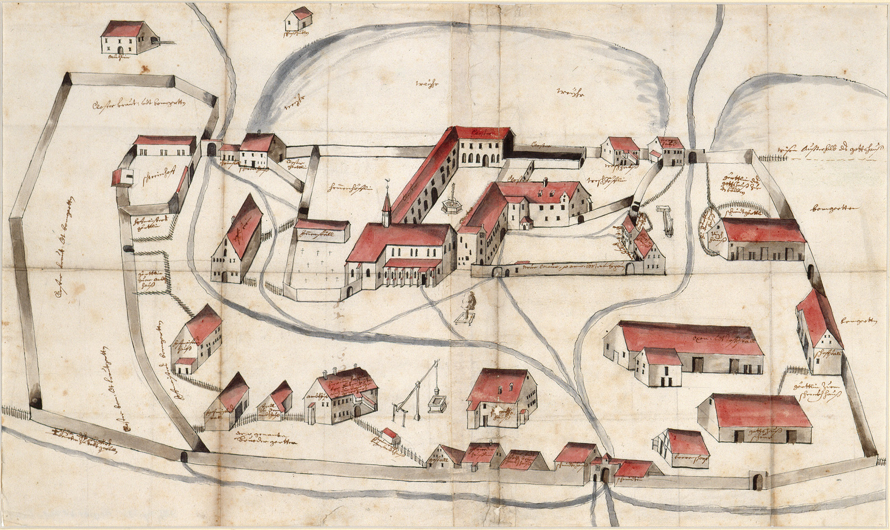
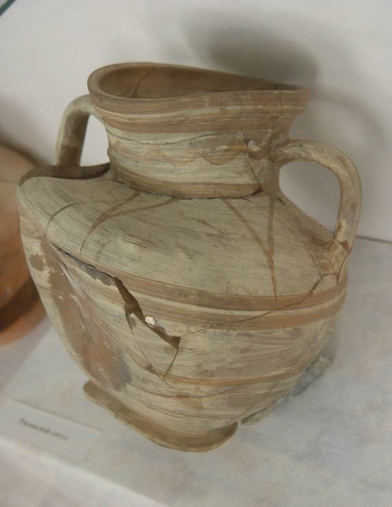
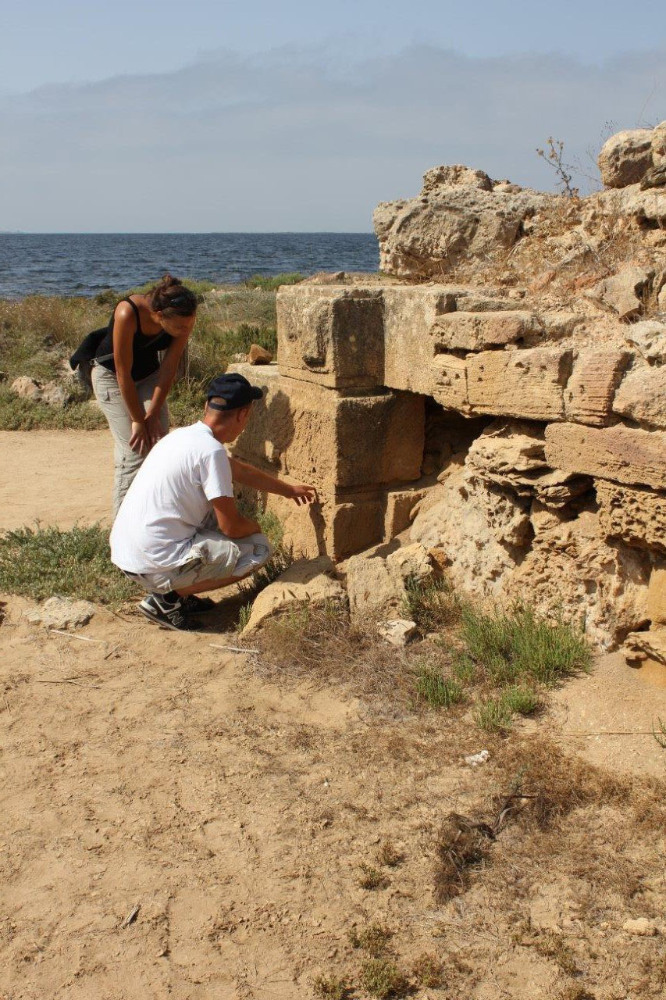
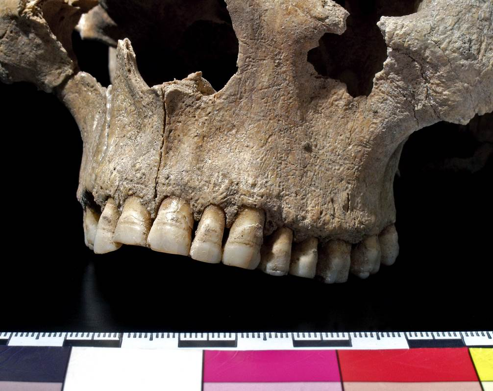

Projektbereich B. Bewegungen Ressourcen und Raumerschließung
B 01 · Variabilität der Ressourcennutzung. Raumerschließung durch späte Neandertaler und frühe anatomisch moderne Menschen in Europa
 Der Zeitabschnitt zwischen ca . 50 .000 und 30 .000 Jahren vor heute stellt für Europa einen menschheitsgeschichtlich bedeutenden Umbruch dar . Nach mehr als 200 .000 Jahren erfolgreicher Existenz sterben die Neandertaler in dieser Phase aus, während in etwa derselben Zeit erstmals anatomisch moderne Menschen Europa betreten und sich auf dem Kontinent ausbreiten . Im Mittelpunkt der Diskussion stehen Fragen nach Art und Weise der Ausbreitung von Homo sapiens aber auch die Gründe des Aussterbens der Neandertaler ...
Mehr lesenB 02 · Gunst – Ungunst? Ressourcenerschließung in Marginalräumen
 Dieses Teilprojekt untersucht in zwei integrierten Fallstudien die Ursachen von Erschließungsprozessen von Ressourcen und damit verbundene Bewegungen in marginale Räume vor dem Hintergrund eines aus spezifischen kulturhistorischen Situationen erwachsenen Ressourcenbedarfs in Gunsträumen . Eine Altsiedellandschaft, in Bezug auf die Ressource Boden Gunstraum und Ausgangspunkt für Bewegungen, sowie zwei unmittelbar benachbarte aber naturräumlich verschiedene Ungunsträume, bilden die naturräumliche Grundanordnung . Während in der einen Fallstudie primär die bodenkundlichen bzw . archäopedologischen Fragestellung ...
Mehr lesenB 03 · Ressourcenerschließung und Herrschaftsräume im Mittelalter: Klöster und Burgen
 Das Teilprojekt thematisiert die Erschließung, Nutzung und Kontrolle von Ressourcen durch Klöster und Burgen im 10 .–14 . Jahrhundert und deren wechselseitiges Beziehungsgefüge bei der Raumerschließung, Nutzungsstrukturierung und damit der Herrschaftsausübung im süddeutsch-schweizerischen Raum . Neben materiellen Ressourcen wie Rohstoffen und landwirtschaftlichen Produkten bilden für Klöster und Burgen vielfältige immaterielle Ressourcen, wie die soziale Ordnung, das Regelwerk, Bildung und schließlich auch der Mensch selbst, Teile der Ressourcenkomplexe ....
Mehr lesenB 04 · Ressourcensuche als Auslöser von „Kolonisationsprozessen“? Ursachenforschung zur Gründung griechischer Pflanzstädte zwischen Schwarzmeer und westlichem Mittelmeer
 Das Teilprojekt untersucht, welche Rolle Ressourcen aller Arten bei antiken „Kolonisations“- und Migrationsprozessen des 8 . – 5 . Jhs . v . Chr . gespielt haben . Hierfür sollen zwei geographische Regionen vergleichend betrachtet werden, die auffällig unterschiedliche Voraussetzungen auf mehreren Ebenen aufweisen . Die unter diesem Aspekt neu zu bewertende Forschungsliteratur ist zusätzlich mit Erkenntnissen zu naturräumlichen Bedingungen und vorhergehender, lokaler Nutzung von Ressourcen zu kombinieren ...
Mehr lesenB 05 · Kolonisierung? Imperialismus? Provinzialisierung? – Ressourcen zwischen Konflikt und Integration im phönizisch-punischen Westen des 1. Jahrtausends v. Chr.
 Gegenstand des Teilprojektes ist die Untersuchung der Bedeutung von Ressourcen im Rahmen der phönizischen „Kolonisation“ hinsichtlich der sozio-kulturellen Dynamiken in den Zielregionen dieses Prozesses . Das Teilprojekt bearbeitet einen geographischen Raum, der mit Nordafrika, Malta, Sizilien, Sardinien und der iberischen Halbinsel einen großen Teil des westlichen Mittelmeerraumes und der angrenzenden Atlantikküsten umfasst; zeitlich wird in der ersten Phase des Teilprojektes das 10 ./9 . Jh . – 6 ./5 . Jh . v . Chr . analysiert ...
Mehr lesenB 06 · Mensch und Ressourcen in Völkerwanderungszeit und frühem Mittelalter – Anthropologische und bioarchäologische Analysen zur Nutzung von Nahrungsressourcen und Detektion von Migrationsbewegungen
 In diesem Projekt wird der Einfluss von ökonomischen, naturräumlichen und soziokulturellen Faktoren auf Ernährungsstrategien und den Lebensstandard im 5 . – 8 . Jahrhundert in Südwest- und Westdeutschland untersucht . Im Fokus der bio archäo logischen Untersuchung stehen die Bestat tungen ausgewählter Reihengräberfelder dieser Zeit . Neben einer statistischen Analyse wirtschaftshistorischer und -geographischer Faktoren soll eine kombinierte Untersuchung von Skelettmerkmalen ...
Mehr lesenB 07 · Eine Jagd nach Rohstoffen? Die Expansion der mesopotamischen Staaten in die Gebirgsländer des Nordens
 Das Teilprojekt untersucht die Strategien zur Inwertsetzung
und Beschaffung kultureller Ressourcen der mesopotamischen Großreiche des 3 .
und 1 . Jahrtausends vor Chr . an deren nördlicher Peripherie im Bergland von Zagros und Taurus .
Das akkadische und das neuassyrische Reich sollen einander gegenüber gestellt werden . Eine erste Fallstudie
untersucht die kulturellen Ressourcen der Assyrer im Norden an Hand von Textquellen, während im Rahmen
einer zweiten Fallstudie ein archäologischer Survey in Irakisch-Kurdistan durchgeführt werden wird,
mit dessen Hilfe Ressourcen strategien....
Das Teilprojekt untersucht die Strategien zur Inwertsetzung
und Beschaffung kultureller Ressourcen der mesopotamischen Großreiche des 3 .
und 1 . Jahrtausends vor Chr . an deren nördlicher Peripherie im Bergland von Zagros und Taurus .
Das akkadische und das neuassyrische Reich sollen einander gegenüber gestellt werden . Eine erste Fallstudie
untersucht die kulturellen Ressourcen der Assyrer im Norden an Hand von Textquellen, während im Rahmen
einer zweiten Fallstudie ein archäologischer Survey in Irakisch-Kurdistan durchgeführt werden wird,
mit dessen Hilfe Ressourcen strategien....